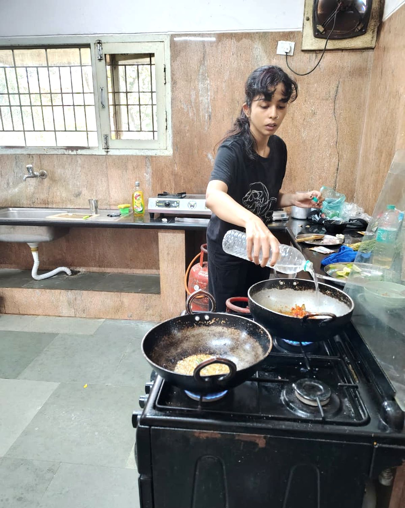

Recipes
Munuma’s
Kitchen
মুনুমার রান্নাঘর
25Recipes
7Sections
25Spices

Meat6 recipes
Fish & Prawn7 recipes
- Echor Chingriএঁচোড় চিংড়িBengalechor
- Kathal Chingriকাঁঠাল চিংড়িBengalkathal
- Macher Kaliaমাছের কালিয়াBengalkashmiri lonka
- Methi Foron Diye Alu Rui Macher Jholমেথি ফোড়ন দিয়ে আলু রুই মাছের ঝোলBengalmethi
- Palong Shaak Diye Macher Mathar Chorchoriপালং শাক দিয়ে মাছের মাথার চচ্চড়িBengalpalong
- Peyajkoli Alu Diye Chingri Maach Chorchoriপেঁয়াজকলি আলু দিয়ে চিংড়ি মাছ চচ্চড়িBengalpeyajkoli
- Pumpkin Fish Curryমিষ্টি কুমড়ো দিয়ে রুই মাছের ঝোলBengalkumro
Egg2 recipes
Vegetables2 recipes
Everyday3 recipes
Sweet4 recipes
Reference1 recipe
Nothing matches.